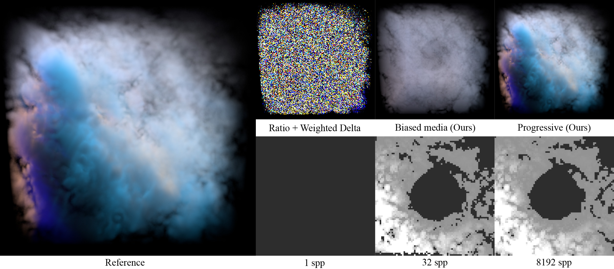

Zackary Misso, Yining Karl Li, Brent Burley, Daniel Teece, Wojciech Jarosz
SIGGRAPH 2023
Most existing unbiased null-scattering methods for heterogeneous participating media require knowledge of a maximum density (majorant) to perform well. Unfortunately, bounding majorants are difficult to guarantee in production, and existing methods like ratio tracking and weighted delta tracking (top, left) suffer from extreme variance if the “majorant” (𝜇 = 0.01) significantly underestimates the maximum density of the medium (𝜇 ≈ 3.0). Starting with the same poor estimate for a majorant (𝜇 = 0.01), we propose to instead clamp the medium density to the chosen majorant. This allows fast, low-variance rendering, but of a modified (biased) medium (top, center). We then show how to progressively update the majorant estimates (bottom row) to rapidly reduce this bias and ensure that the running average (top right) across multiple pixel samples converges to the correct result in the limit.
Null-collision approaches for estimating transmittance and sampling free-flight distances are the current state-of-the-art for unbiased rendering of general heterogeneous participating media. However, null-collision approaches have a strict requirement for specifying a tightly bounding total extinction in order to remain both robust and performant; in practice this requirement restricts the use of null-collision techniques to only participating media where the density of the medium at every possible point in space is known a-priori. In production rendering, a common case is a medium in which density is defined by a black-box procedural function for which a bounding extinction cannot be determined beforehand. Typically in this case, a bounding extinction must be approximated by using an overly loose and therefore computationally inefficient conservative estimate. We present an analysis of how null-collision techniques degrade when a more aggressive initial guess for a bounding extinction underestimates the true maximum density and turns out to be non-bounding. We then build upon this analysis to arrive at two new techniques: first, a practical, efficient, consistent progressive algorithm that allows us to robustly adapt null-collision techniques for use with procedural media with unknown bounding extinctions, and second, a new importance sampling technique that improves ratio-tracking based on zero-variance sampling.